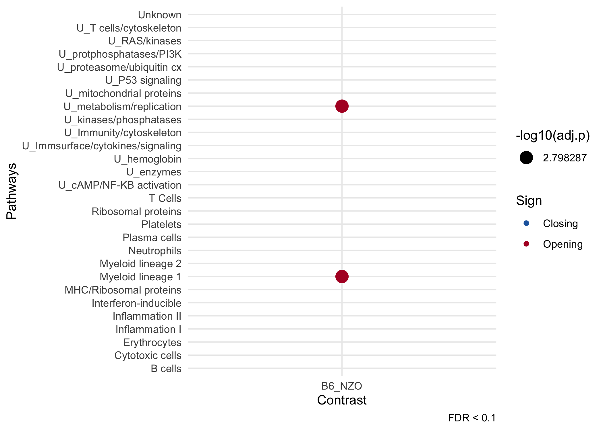

Overview
cinaR is a single wrapper function for end-to-end computational analyses of bulk ATAC-seq profiles. It starts from a consensus peak file and outputs Differentially Accessible (DA) peaks and Enrichment Analyses results.
Installation
library(devtools) install_github("eonurk/cinaR")
Quick Start
library(cinaR) data("atac_seq_consensus_bm") contrasts<- c("B6", "B6", "B6", "B6", "B6", "NZO", "NZO", "NZO", "NZO", "NZO", "NZO", "B6", "B6", "B6", "B6", "B6", "NZO", "NZO", "NZO", "NZO", "NZO", "NZO") results <- cinaR(bed, contrasts, reference.genome = "mm10") #> #> >> preparing features information... 2020-10-17 23:44:39 #> >> identifying nearest features... 2020-10-17 23:44:41 #> >> calculating distance from peak to TSS... 2020-10-17 23:44:43 #> >> assigning genomic annotation... 2020-10-17 23:44:43 #> >> assigning chromosome lengths 2020-10-17 23:45:09 #> >> done... 2020-10-17 23:45:09 #> >> Method: edgeR #> FDR: 0.05 & abs(logFC)< 0 #> >> Estimating dispersion... #> >> Fitting GLM... #> >> DA peaks are found! #> >> No `geneset` is specified so immune modules (Chaussabel, 2008) will be used! #> >> enrichment.method` is not selected. Hyper-geometric p-value (HPEA) will be used! #> >> Converting mouse genes to human... #> >> Mouse to human mapping is created for all genes! #> >> Human gene symbols are converted to mice! #> >> Enrichment results are ready... #> >> Done! dot_plot(results) #> Warning: Removed 54 rows containing missing values (geom_point).
